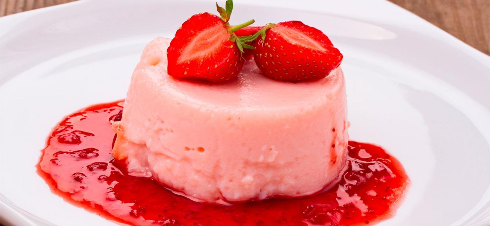
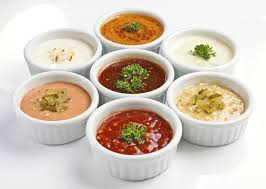
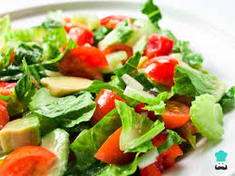

RECETAS
¿Está buscando ideas para el desayuno, postres o un platillo especial? Haga clic en las categorías a continuación para descubrir deliciosas recetas que puede probar.
Desayunos

Postres

Salsas y Aderezos

Ensaladas